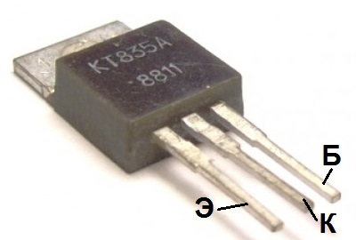
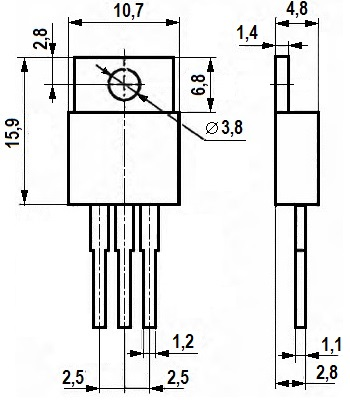

Транзистор КТ835
КТ835 - транзисторы кремниевые мезаэпитаксиально-планарные, структуры p-n-p, усилительные.
Предназначены для применения в усилителях, преобразователях и импульсных устройствах.
Корпус пластмассовый с жесткими выводами. Тип корпуса: КТ-28 (ТО-220). Масса транзистора не более 2,5 г.


Рис. 1 - Внешний вид, цоколёвка и размеры транзистора КТ835
Таблица 1
| Транзистор | Iк макс, А | Iк и макс, А | Uкэ макс, В | Uкб макс, В | Uэб макс, В | Pк макс, Вт | Uкэ нас, В |
|---|---|---|---|---|---|---|---|
| КТ835А | 3 | 7,5 | 30 | 30 | 4 | 25 | 0,35 |
| КТ835Б | 3 | 7,5 | 30 | 45 | 4 | 25 | 0,5 |
Таблица 2
| Тип транзистора |
h21э | Uкэ нас, В | Iкб0, мА | fгр, МГц | Ск,пФ | Tп max,°C | Тmax,°C |
|---|---|---|---|---|---|---|---|
| КТ835А | >20 | <0,35 | 0,1 | >1 | <800 | 125 | -40…+100 |
| КТ835Б | 10…100 | <2,5 | 0,15 | >1 | <800 | 125 | -40…+100 |